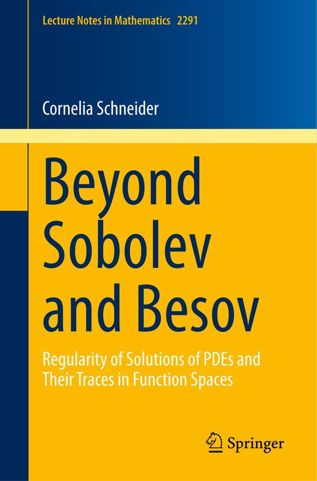

Publications
Books and research papers
Publications in function spaces, regularity theory, adaptive approximation and the mathematical analysis of neural networks. One book, 41 research articles and three theses.
Book

Beyond Sobolev and Besov
Regularity of solutions of PDEs and their traces in function spaces
Lecture Notes in Mathematics 2291, Springer, 2021. 327 pages.
The monograph develops the regularity theory of partial differential equations in the scales of function spaces that govern adaptive approximation, and the trace results that go with them.
Submitted
- 41 Approximation classes for the anisotropic space-time finite element method. An almost characterization with P. Morin and N. Schneider Submitted, 2026. arXiv:2602.14921
Journal articles
- 40 Bases of Lebesgue spaces formed by neural networks with V. Kulbatov, J. Lang and J. Vybíral To appear in J. Fourier Anal. Appl., 2026. arXiv:2511.23179
- 39 Nonlocal techniques for the analysis of deep ReLU neural network approximations with M. Ullrich and J. Vybíral J. Mach. Learn. Res. 27(11):1–41, 2026. arXiv:2504.04847
- 38 Anisotropic approximation on space-time domains with P. Morin and N. Schneider J. Approx. Theory 317:106282, 2026. arXiv:2506.19517
- 37 Weighted Sobolev and Besov regularity of non-linear parabolic PDEs on non-convex polyhedral domains with S. Dahlke and M. Hansen Z. Angew. Math. Mech. 106(8), e70538, 2026. arXiv:2105.13355
- 36 Refined localization spaces, Kondratiev spaces with fractional smoothness and extension operators with M. Hansen To appear in Z. Anal. Anwendungen, 2024. arXiv:2405.06316
- 35 Improved universal approximation with neural networks studied via affine-invariant subspaces of L2(ℝn) with S. Probst Electron. J. Appl. Math. 3(1), 2025. doi:10.61383/ejam.20253188
- 34 Sobolev spaces with mixed weights and the Poisson equation on angular domains with P. Cioica-Licht and M. Weimar Ann. Sc. Norm. Super. Pisa Cl. Sci. 49, 2025. arXiv:2409.18615
- 33 Direct estimates for adaptive time-stepping finite element methods with M. Actis, F. Gaspoz, P. Morin and N. Schneider J. Complexity 87, 101918, 2025. doi:10.1016/j.jco.2024.101918
- 32 Relations between Kondratiev and refined localization Triebel–Lizorkin spaces with M. Hansen and B. Scharf J. Approx. Theory 106162, 2025. doi:10.1016/j.jat.2025.106162
- 31 Embeddings and pointwise multiplication in Kondratiev spaces on polyhedral type domains with M. Hansen Z. Anal. Anwendungen 44(1/2):35–77, 2025. doi:10.4171/ZAA/1779
- 30 A multivariate Riesz basis of ReLU neural networks with J. Vybíral Appl. Comput. Harmon. Anal. 68:101605, 2024. doi:10.1016/j.acha.2023.101605
- 29 Path regularity of Brownian motion and Brownian sheet with H. Kempka and J. Vybíral Constr. Approx., 2023. doi:10.1007/s00365-023-09647-z
- 28 Besov regularity of inhomogeneous parabolic PDEs with F. Szemenyei Partial Differ. Equ. Appl. 4(43):1–61, 2023. doi:10.1007/s42985-023-00262-y
- 27 Approximation classes for adaptive time-stepping finite element methods with M. Actis and P. Morin IMA J. Numer. Anal. 43(5):2817–2855, 2023. doi:10.1093/imanum/drac056
- 26 Anisotropic Besov regularity of parabolic PDEs with S. Dahlke Pure Appl. Funct. Anal. 8(2):457–476, 2023. arXiv:2112.09485
- 25 Sobolev meets Besov: Regularity for the Poisson equation with Dirichlet, Neumann and mixed boundary values with F. Szemenyei Anal. Appl. 20(5):989–1023, 2022. doi:10.1142/S0219530522500026
- 24 An extension operator for Sobolev spaces with mixed weights with M. Hansen and F. Szemenyei Math. Nachr. 295(10):1969–1989, 2022. doi:10.1002/mana.202000590
- 23 Regularity in Sobolev and Besov spaces for parabolic problems on domains of polyhedral type with S. Dahlke J. Geom. Anal. 31(12):11741–11779, 2021. doi:10.1007/s12220-021-00700-6
- 22 Growth envelopes of some variable and mixed function spaces with D. D. Haroske and K. Szarvas J. Geom. Anal. 32(3), paper no. 94, 2022. doi:10.1007/s12220-021-00811-0
- 21 On Besov regularity of solutions to nonlinear elliptic partial differential equations with S. Dahlke, M. Hansen and W. Sickel Nonlinear Anal. 192, 111686, 2020. doi:10.1016/j.na.2019.111686
- 20 Traces of shearlet coorbit spaces on domains with S. Dahlke, Q. Jahan, G. Steidl and G. Teschke Appl. Math. Lett. 91:35–40, 2019. doi:10.1016/j.aml.2018.11.019
- 19 Traces and extensions of generalized Besov-Morrey and Triebel-Lizorkin-Morrey spaces on domains with S. D. Moura and J. S. Neves Nonlinear Anal. 181:311–339, 2019. doi:10.1016/j.na.2019.01.003
- 18 Symmetries on manifolds: Generalizations of the radial lemma of Strauss with N. Große Rev. Mat. Complut. 32:365–393, 2019. arXiv:1803.05351
- 17 Besov regularity of parabolic and hyperbolic PDEs with S. Dahlke Anal. Appl. 17:235–291, 2019. doi:10.1142/S0219530518500306
- 16 Describing the singular behaviour of parabolic equations on cones in fractional Sobolev spaces with S. Dahlke GEM Int. J. Geomath. 9:293–315, 2018. doi:10.1007/s13137-018-0106-2
- 15 Morrey spaces on domains: Different approaches and growth envelopes with D. D. Haroske and L. Skrzypczak J. Geom. Anal. 28:817–841, 2018. doi:10.1007/s12220-017-9843-y
- 14 Unboundedness properties of smoothness Morrey spaces of regular distributions with D. D. Haroske, S. D. Moura and L. Skrzypczak Sci. China Math. 60(12):2349–2376, 2017. doi:10.1007/s11425-017-9113-9
- 13 Spaces of generalized smoothness in the critical case: Optimal embeddings, continuity envelopes, and approximation numbers with S. D. Moura and J. S. Neves J. Approx. Theory 187:82–117, 2014. doi:10.1016/j.jat.2014.07.010
- 12 Sobolev spaces on Riemannian manifolds with bounded geometry: general coordinates and traces with N. Große Math. Nachr. 286(16):1586–1613, 2013. doi:10.1002/mana.201300007
- 11 On trace spaces of 2-microlocal Besov spaces with variable integrability with S. D. Moura and J. S. Neves Math. Nachr. 286(11–12):1240–1254, 2013. doi:10.1002/mana.201200092
- 10 Non-smooth atomic decompositions, traces on Lipschitz domains, and pointwise multipliers in function spaces with J. Vybíral J. Funct. Anal. 264(5):1197–1237, 2013. doi:10.1016/j.jfa.2012.12.005
- 9 Homogeneity property of Besov and Triebel-Lizorkin spaces with J. Vybíral J. Funct. Spaces Appl., Art. ID 281085, 17 pp., 2012. doi:10.1155/2012/281085
- 8 Optimal embeddings of spaces of generalized smoothness in the critical case with S. D. Moura and J. S. Neves J. Fourier Anal. Appl. 17(5):777–800, 2011. doi:10.1007/s00041-010-9155-0
- 7 Trace operators on fractals, entropy and approximation numbers Georgian Math. J. 18(3):549–575, 2011. doi:10.1515/gmj.2011.0030
- 6 Traces in Besov and Triebel-Lizorkin spaces on domains Math. Nachr. 284(5–6):572–586, 2011. doi:10.1002/mana.201010052
- 5 Trace operators in Besov and Triebel–Lizorkin spaces Z. Anal. Anwendungen 29(3):275–302, 2010. doi:10.4171/ZAA/1409
- 4 On dilation operators in Triebel–Lizorkin spaces with J. Vybíral Funct. Approx. Comment. Math. 41(2):139–162, 2009. doi:10.7169/facm/1261157806
- 3 Spaces of Sobolev type with positive smoothness on ℝn, embeddings and growth envelopes J. Funct. Spaces Appl. 7(3):251–288, 2009. doi:10.1155/2009/815676
- 2 Besov spaces with positive smoothness on ℝn, embeddings and growth envelopes with D. D. Haroske J. Approx. Theory 161(2):723–747, 2009. doi:10.1016/j.jat.2008.12.004
- 1 On dilation operators in Besov spaces Rev. Mat. Complut. 22(1):111–128, 2009. doi:10.5209/rev_REMA.2009.v22.n1.16324
Theses
- III Besov regularity of partial differential equations, and traces in function spaces Habilitation thesis, Philipps-University Marburg, 2020.
- II Besov spaces with positive smoothness Dissertation, Leipzig University, 2009.
- I Growth envelopes in Sobolev spaces Diplomarbeit (Master thesis), FSU Jena, 2006.